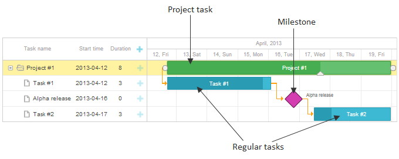
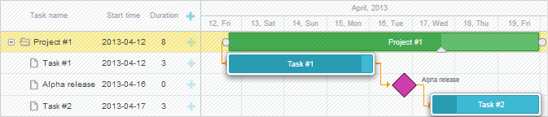
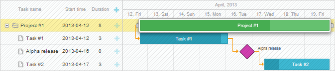
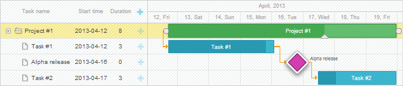
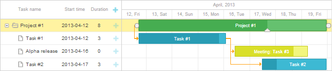
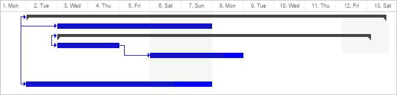

This functionality is available only in the PRO edition.
There are 3 predefined types of tasks that you can present in a Gantt chart (you can also add a custom type):

To set the type of a task, use the type property of a data item (values are stored in the types object):
Specifying the type of a task in the data set
var data = {
task:[
{id:1, text:"Project #1", type:gantt.config.types.project, open:true}, {id:2, text:"Task #1", start_date:"12-04-2020", duration:3, parent:1},
{id:3, text:"Alpha release", type:gantt.config.types.milestone, parent:1, start_date:"14-04-2020"}, {id:4, text:"Task #2", start_date:"17-04-2020", duration:3, parent:1}],
links:[]
};
Related sample: Projects and milestones
By default, dhtmlxGantt provides creating of regular tasks (tasks with type="task").

Specifying regular tasks
var data = {
tasks:[{id:2, text:"Task #1", start_date:"12-04-2020", duration:3}], links:[]
};
//or
var data = {
tasks:[{id:2, text:"Task #1", start_date:"12-04-2020", duration:3, type:gantt.config.types.task}], links:[]
};
Related sample: Projects and milestones
Tasks with type="task" can be characterized as follows:
Project task is a task that starts, when its earliest child task starts, and ends, when its latest child ends.
The difference between project and regular tasks is that the duration of a project task depends on its children and is changed respectively.

Specifying project tasks
var data = {
tasks:[
{id:1, text:"Project #1", type:gantt.config.types.project, open:true}, {id:2, text:"Task #1", start_date:"12-04-2020", duration:3, parent:1},
{id:3, text:"Alpha release", type:gantt.config.types.milestone, parent:1,
start_date:"14-04-2020"}],
links:[]
};
Related sample: Projects and milestones
Tasks with type="project" can be characterized as follows:
Related sample: Calculate Progress of Summary Tasks
To provide a possibility of adding project tasks, read article Milestones. A possibility to add milestones guarantees that your end users can add project tasks as well.
Milestone is a zero-duration task that is used to mark out important dates of the project (more details).

Specifying milestones
var data = {
tasks:[
{id:1, text:"Project #1", type:gantt.config.types.project, open:true},
{id:2, text:"Task #1", start_date:"12-04-2020", duration:3, parent:1},
{id:3, text:"Alpha release", type:gantt.config.types.milestone, parent:1, start_date:"14-04-2020"}], links:[]
};
Related sample: Projects and milestones
Tasks with type="milestone" can be characterized as follows:
To provide a possibility of adding milestones, read article Milestones.
Each type of a task has its own set of characteristics. That's why an individual configuration of the details form (lightbox) can be defined for each type. All configurations are stored in the lightbox object.
They are:
The default configuration settings are the following:
gantt.config.lightbox.sections = [
{name: "description", height: 70, map_to: "text", type: "textarea", focus: true},
{name: "time", type: "duration", map_to: "auto"}
];
gantt.config.lightbox.project_sections= [
{name: "description", height: 70, map_to: "text", type: "textarea", focus: true},
{name: "type", type: "typeselect", map_to: "type"},
{name: "time", type: "duration", readonly: true, map_to: "auto"}
];
gantt.config.lightbox.milestone_sections= [
{name: "description", height: 70, map_to: "text", type: "textarea", focus: true},
{name: "type", type: "typeselect", map_to: "type"},
{name: "time", type: "duration", single_date: true, map_to: "auto"}
];
When a user changes the type of a task in the related select, the corresponding configuration is applied to the the lightbox popup and it is updated dynamically.
You can add a custom type and specify an appropriate structure of the lightbox for it as well.
To go into details on a lightbox configuration, you can read the Configuring Edit Form chapter.
All tasks' types are defined in the types object.
Generally, to add a custom tasks' type you need to:
Let's assume, you want to add a new type of tasks - meeting. Meeting will be an ordinary task but colored in different color and with different inputs in the lightbox.

To define a new type with the name meeting and specify an individual lightbox for it, use the following technique:
gantt.config.types.meeting = "type_id";
gantt.locale.labels.type_meeting = "Meeting";
gantt.config.lightbox.meeting_sections = [
{name:"title", height:20, map_to:"text", type:"textarea", focus:true},
{name:"details", height:70, map_to: "details", type: "textarea"},
{name:"type", type:"typeselect", map_to:"type"},
{name:"time", height:72, type:"time", map_to:"auto"}
];
gantt.locale.labels.section_title = "Subject";
gantt.locale.labels.section_details = "Details";
.meeting_task{
border:2px solid #BFC518;
color:#6ba8e3;
background: #F2F67E;
}
.meeting_task .gantt_task_progress{
background:#D9DF29;
}gantt.templates.task_class = function(start, end, task){
if(task.type == gantt.config.types.meeting){
return "meeting_task";
}
return "";
};
gantt.templates.task_text = function(start, end, task){
if(task.type == gantt.config.types.meeting){
return "Meeting: <b>" + task.text + "</b>";
}
return task.text;
};
Related sample: Custom task type
To customize the look of existing task types, use the type_renderers option. The options allows you to redefine functions responsible for displaying different tasks types on the page.

gantt.config.type_renderers[gantt.config.types.project]=function(task, defaultRender){
var main_el = document.createElement("div");
main_el.setAttribute(gantt.config.task_attribute, task.id);
var size = gantt.getTaskPosition(task);
main_el.innerHTML = [
"<div class='project-left'></div>",
"<div class='project-right'></div>"
].join('');
main_el.className = "custom-project";
main_el.style.left = size.left + "px";
main_el.style.top = size.top + 7 + "px";
main_el.style.width = size.width + "px";
return main_el;
};